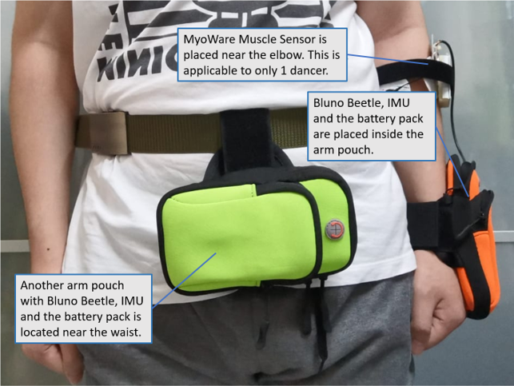
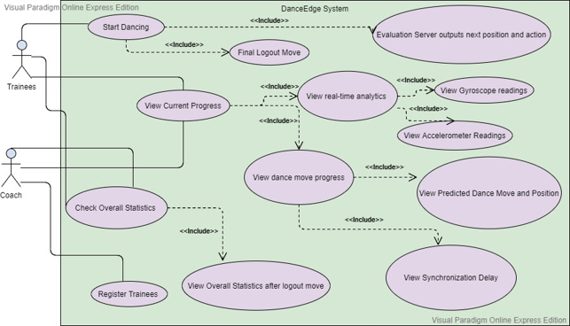
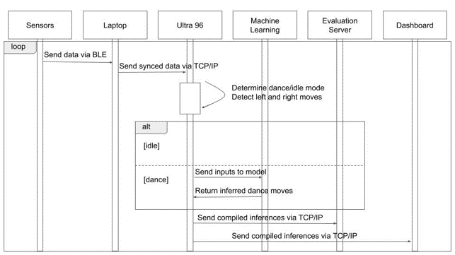
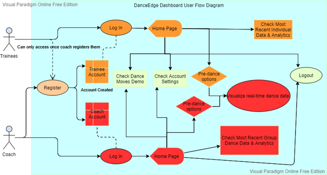
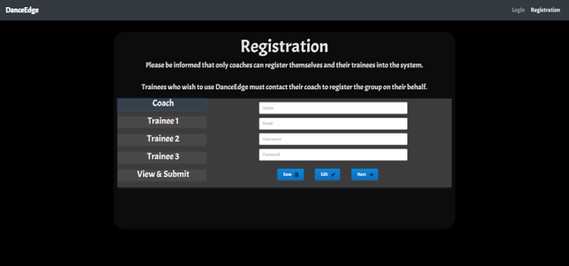
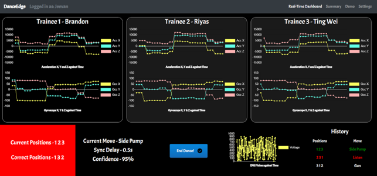
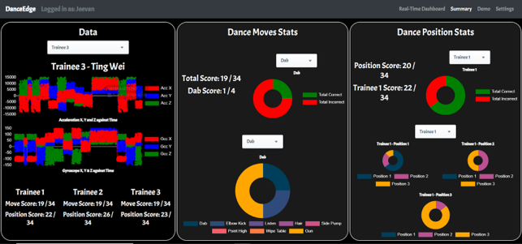

Project information
- Tag: Python | Arduino | Bluno Beetle | Ultra96 | Machine Learning | MERN Stack
Worked with a team of 6 to construct a smart wearable system that instantly detects and identifies dance moves and dancers' relative positions using neural network
System comprised of a wrist wearable that dancers will wear, servers to collect data from the wearables and transmit to the Ultra96, a neural network (built and trained by us) to identify dance moves and positions and dashboard to display the dancers' data, predicted dance moves and positions
Designed the internal communications subcomponent including establishing multithreaded BLE communication channels between multiple bluno beetles (connected to sensors) and a laptop to transmit sensor data as TCP packets
Assisted in building and training a CNN model to detect dance moves and positions. Also used Boxplots and T-SNE were the data exploration techniques to decide the features to extract to train the model.
Also assisted in building the dashboard using the MERN stack - MongoDB, Express Framework, ReactJS library and NodeJS runtime environment